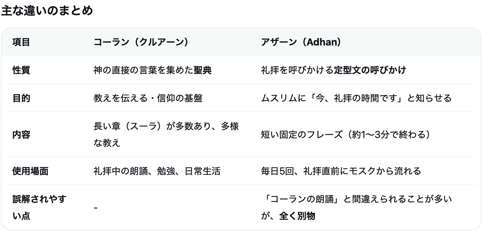
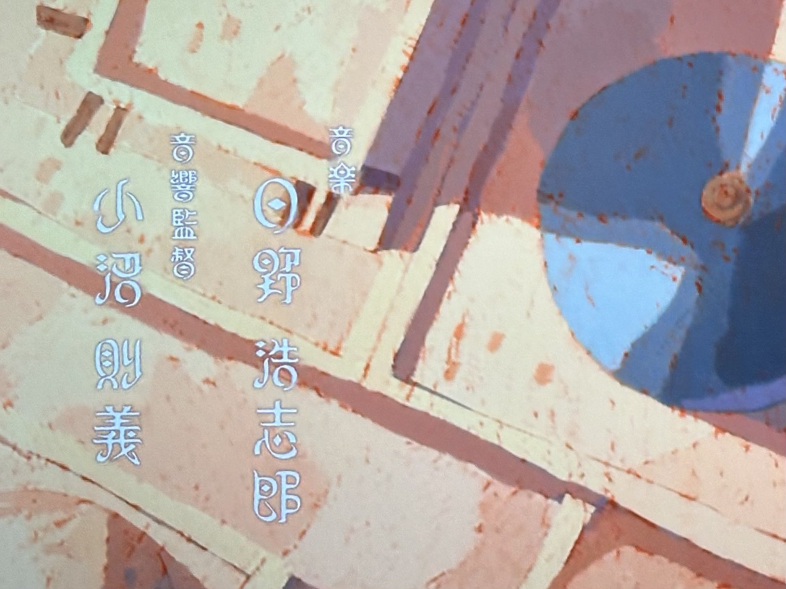

コーランとアザーンの言葉の違いもよく分かっていなかった。恥ずかしい。でもこの機会に曖昧な知識が正しく理解できるようになったのは嬉しい。ちなみに原作でもアニメーションでも共にコーランは「クルアーン」と発音されていた。#天幕のジャードゥーガル


エンドス
@los_endos_
劇伴の日野浩志郎さんの音楽は、イスラーム圏の音楽や弦楽器（多分、カーヌーンやウード）を取り入れた本格的なもので、コーランの詠唱も聴こえてくる。おそらくこの先に登場するであろうモンゴル圏の音楽的要素も楽しみで、日野さんのキャリアを更新するほどインパクトのあるものになると思う。劇伴の